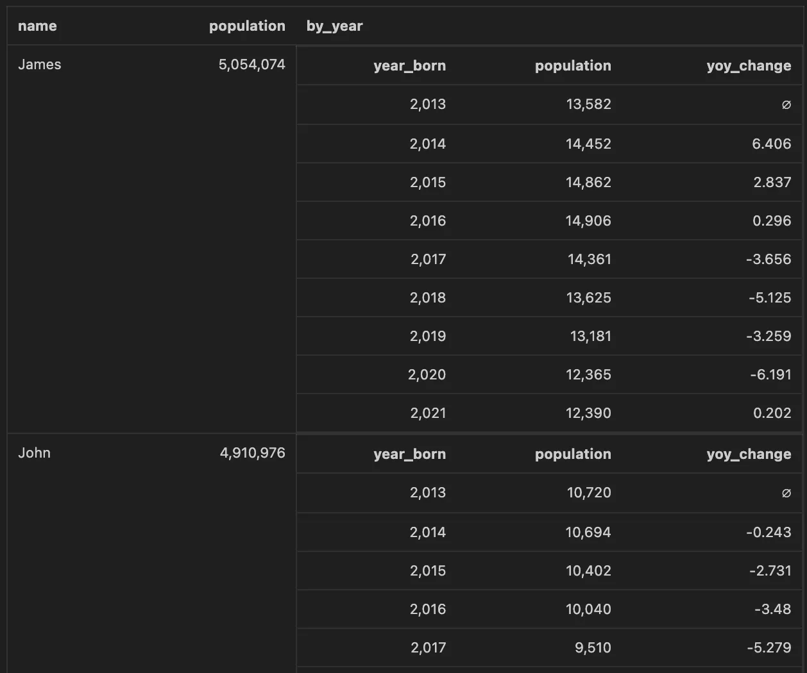

All Posts
All Posts
We've been kinda busy...
June 15, 2023 by Lloyd Tabb and Carlin Eng
There are a bunch of new features in Malloy that will be landing in the coming weeks. Some of these features have already partially landed. We're pre-announcing so if some of these features are interesting to you, we can get early feedback. Expect detailed blog posts about each of these in the coming weeks. Please join our slack and ask any question.
MalloySQL - Transform data with Malloy
Malloy aims to be syntactically the same no matter what database contains the data. Unfortunately, in different databases, the SQL DDL commands (CREATE VIEW for example) are all necessarily so different. Making something consistent for SQL DDL would also mean reducing power. We've are introduced a new file type malloysql that can contain both Malloy and SQL. MalloySQL allows you to import models and execute SQL commands. In SQL in place of SELECT ... FROM, you can use Malloy queries. We are pretty excited about this.
As a simple example, let's take a look at the “Names” data model, built from a dataset published by the Social Security Administration, containing counts of baby names in each state by gender. In the Names source, we model a few metrics of interest, such as total births, and births per 100k:
Now, in a malloysql file, I can create views or materialize tables in the database containing different slices of the data, cut by different dimensions:
This creates two new views in my database, with different rollups of the metric of interest. The ability to persist artifacts from Malloy queries back into the database will unlock a new set of use cases, and we're excited to see what people build.
Calculate: Window Functions
We are finally ready to talk about Window Functions + Malloy. Window functions in SQL are pretty hard to learn. We've simplified these calculations while retaining most of the power. Malloy introduces a calculate: phase that operates against the produced columns in a query. Malloy has built in functions for ranking, rolling averages and all the other usual window functions. Importantly, this calculate: step can operate even when a query is nested.
Using the same Names model from above, we can now use a lag window function to look at the top names in the dataset, and their year-over-year change in popularity:
which gives the following results:
Malloy's standard data function library
Many different SQL dialects implement functions differently. This often creates confusion. The built in Malloy functions operate the same regardless of the SQL engine you are running against. Malloy also has the ability to call any native function (or UDF) on any supported SQL engine so no power is lost in this effort. If the function you need is not supported directly by Malloy, simply append ! to the function name, and Malloy treat the function name and its arguments as a direct pass-through to the underlying database.
The full list of functions (including all scalar, aggregate, and analytic functions) will be available on our documentation page once the change arrives.
Annotations - adding semantics to your result set
Queries against datasets serve all kinds of systems. Queries can be used in Business Intelligence, Machine learning (and other AI functions), data transformation and more. Often additional information is needed along with the result set to clue in the layer above what to do with the data. Other systems co-mingle this data for a specific purpose. Malloy has a generalized solution to this problem so the same data model/ query can serve multiple uses. Think of it as CSS (Cascading Style Sheets) for data.
For example:
Business intelligence: a query result might be rendered as a bar chart or a calculation might be rendered as us currency. Queries can be annotated as to how they should be visually represented. Individual columns can be styled.
Transformation: the results of the query should be written back to the database using certain columns as partitioning. An annotation on a query can indicate which output column to use as a partition when creating a table.
AI/Machine learning: Columns can be labeled for different uses in machine learning. Labels and synonyms can be written as annotations.
For example, in the names query above, we calculate the year-over-year change in names over time. We can annotate the yoy_change field with styling information. This metadata is returned alongside the results, and can serve as a clue to the rendering engine to display the data with the given style.
We are still arguing over the syntax, so no example just yet. We will show you soon.
Python: The imperative language of data.
Using Malloy with Python is now pretty easy. The malloy-py library allows you to interact with a Malloy runtime that can be used to either execute queries against your database, or serve as a query compiler. We're also working on tighter integration with the notebook ecosystem, and will soon have Jupyter magics available so you can write Malloy queries directly from a notebook. For example, the following query would issue a query to the database, retrieve the result, and return a Pandas dataframe.
%%malloy query: names -> { group_by: name aggregate: population }
Once the results are in the dataframe, they can be used as part of any typical machine learning workflow. It's often remarked that ML Engineering is 90% Data Engineering, and yet, the tools that ML Engineers use live in a parallel universe to much of the technology in the data warehousing and business intelligence space. This integration is a critical piece of the puzzle, marrying the safety and reusability of a semantic layer's metric definitions with the capabilities of Python for data science tasks like training ML models or time series forecasting.